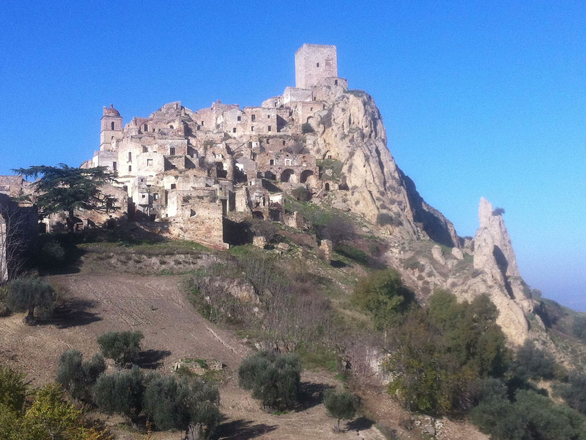
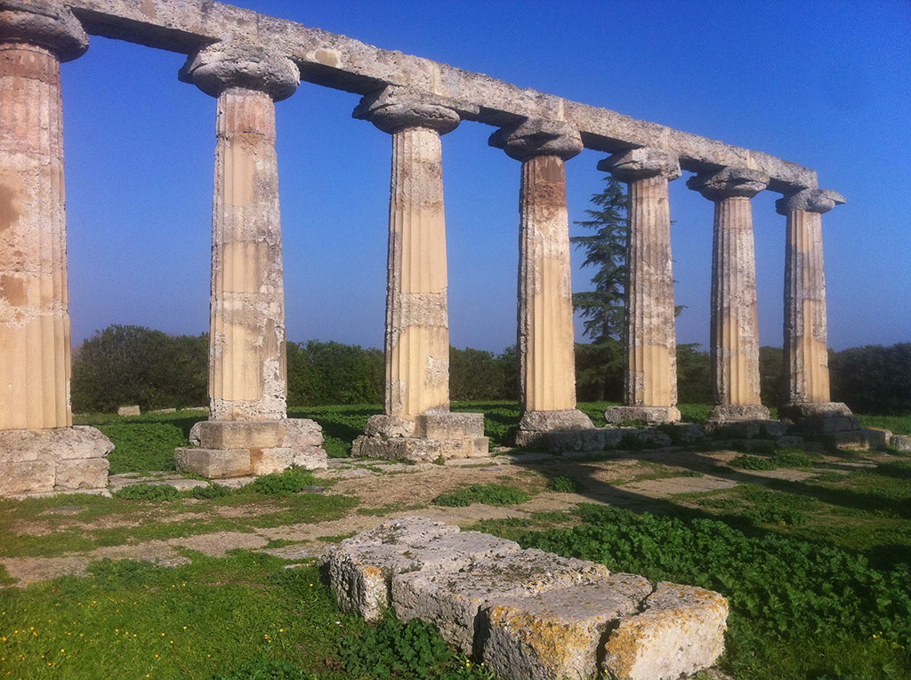
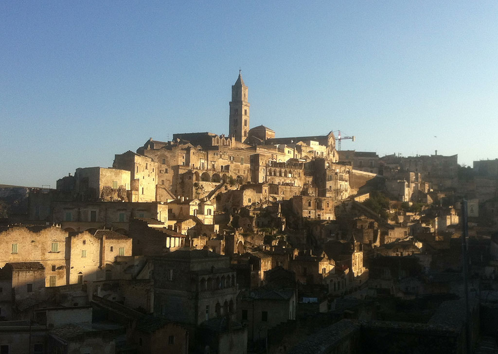
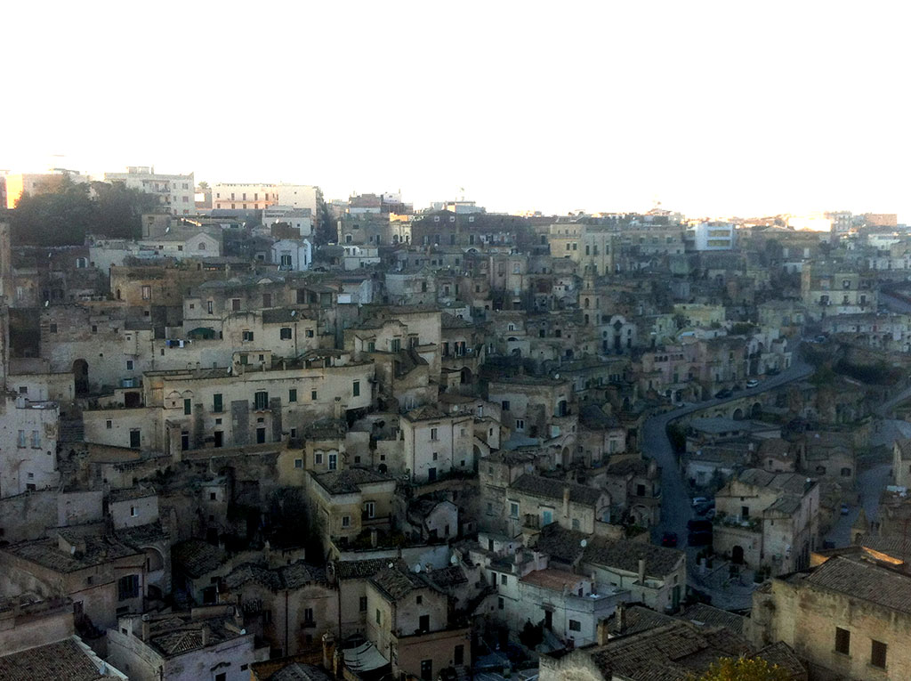

En Basilicate : 5
Après la folie magique de la veille, je n'ai pas réussi à me refaire un shoot mystique. J'ai traîné devant la ville fantôme de Craco, dans ma tête les corbeaux s'étaient transformés en chauves-souris de Dracula. À cause des inondations des semaines précédentes, je n'ai pas pu visiter Metaponto, la ville où se laissa mourir Pythagore. Seuls les vestiges du temple grec d'Héra étaient accessibles, mais gâchés par l'autoroute tonitruante en arrière-plan. J'ai fini à Matera, capitale de la région et ville troglodyte où Mel Gibson a tourné La Passion du Christ.

Craco, l'autre château de Dracula

Tavole Palatine

Matera

Matera
Suite | 2013 | Sommaire | Texte publié vendredi 13 décembre 2013